東京鐵路
各鐵路比較
| 項目 | 東京地鐵 | JR線 | 私鐵 |
|---|---|---|---|
| 覆蓋範圍 | 主要覆蓋東京市中心區域 | 覆蓋東京都及周邊地區 | 各線路覆蓋特定區域 |
| 主要線路 | 東京Metro (9條線)
都營地鐵 (4條線) |
山手線、中央線、総武線、埼京線和京浜東北線等 | 京王線、小田急線、東武線等 |
| 優惠票券 | Tokyo Subway Ticket | JR PASS | 有自己的優惠票 |
| 優點 | 覆蓋主要觀光景點，班次密集 | 可使用JR Pass，覆蓋範圍廣 | 某些私鐵路線可到達一些特定景點或機場 |
| 缺點 | 不包含JR和私鐵線路 | 市中心站點較少，高峰時段較擁擠 | 需要轉乘其他交通工具 |
| 適合人群 | 主要在東京市中心遊覽的遊客 | 持有JR Pass的遊客 | 前往特定景點的遊客 |
| IC卡使用 | 可使用Welcome Suica | ||
➢ 地鐵 (官網連結)
目前的東京地鐵系統是由2家公司運營共13條：
- 東京地下鐵(Tokyo Metro)，由東京metro運營 銀座線、丸之內線、日比谷線、東西線、千代田線、有樂町線、半藏門線、南北線與副都心線，等共9條路線。
- 都營地下鐵(Toei Subway)，運營 淺草線、三田線、新宿線與大江戶線，等共4條線路。
這13條地鐵線路覆蓋的範圍非常廣，除了東京大部分主要區域之外，像是熱門景點如澀谷、新宿、銀座等都是可以搭乘地鐵抵達的。
如果是單程票可以直接在自動售票機購買就可以，但如果自由行會同時需要使用多種交通工具，像是：地鐵、巴士、JR線等，建議可以購買IC卡，或者直接購買東京地鐵通票(Tokyo Subway Ticket),就能在指定期限內無限次搭乘東京地鐵和都營地下鐵。
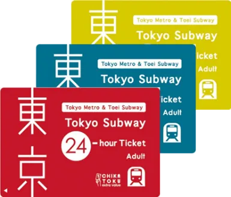
72小時(1500/750)
地鐵路線圖
點擊放大
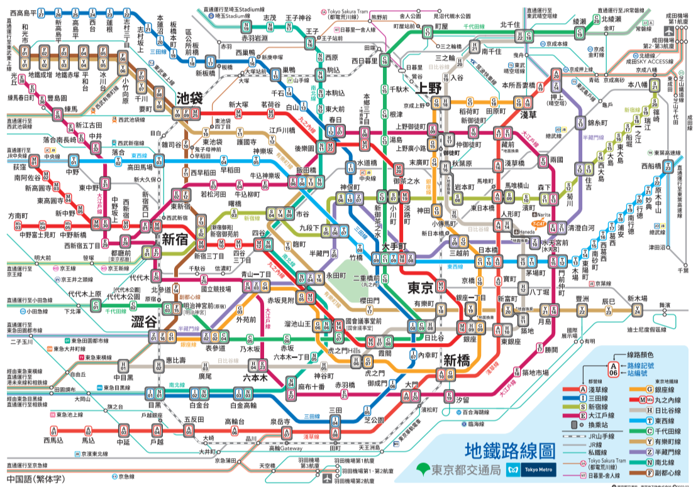
➢ JR (官網連結)
JR在東京主要負責市區和近郊的鐵路運輸，所以在日本想要跨城市，JR就是最適合你長距離移動的交通方式。
JR鐵路集團依照區域，東京部份是由東日本旅客鐵道（JR東日本）負責營運的，是東京地區的主要鐵路線，連結東京市區與郊區的重要交通工具。
JR最著名的就是山手線，也是東京都心最重要的交通、通勤路線之一，呈環狀設計，貫穿了許多東京重要的地區，像是：上野、東京、品川、澀谷、新宿、池袋等等東京主要商業區和觀光景點，非常便利。
所以如果你打算在日本多個城市間移動，建議可以參考專為外國旅客發行的交通卡：JR Pass！
JR Pass非常適合長距離跨區域移動，但如果行程只在東京市區內活動，那買JR Pass可能就不太划算了。
點擊放大
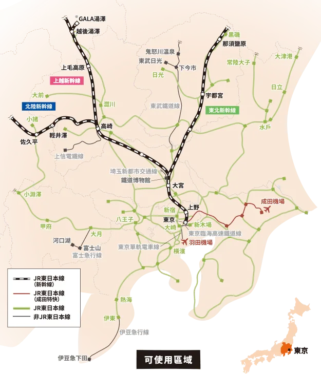
點擊放大
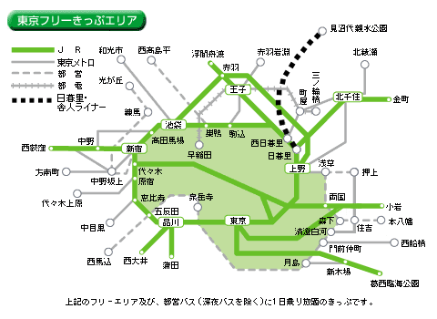
JR路線圖
點擊放大
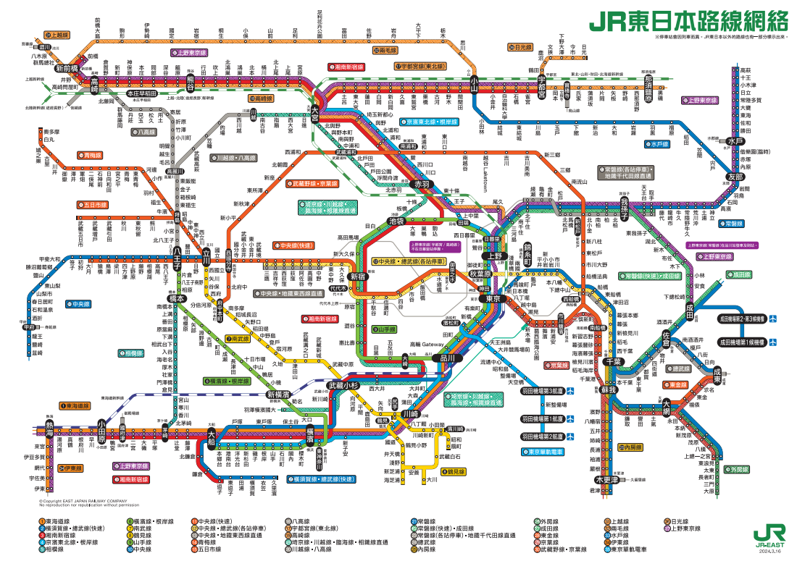
➢ 私鐵 (官網連結)
以上二種交通方式，一個是東京市區內的東京地鐵，可以讓你在東京市區內自由移動，另一個是可以跨城市長程移動的JR線外，如果想去日本東京之外的郊區，JR和東京地鐵都到不了的地方，該搭乘什麼交通呢？
答案是私鐵！因為私鐵不僅連接東京郊區，還有許多線路也經過市區並且和地鐵進行直通運轉。
什麼是「直通運轉」？直通運轉就是搭乘私鐵時，不用再下車轉車就可以直接變成地下鐵路線。但建議上車前一定務必要確認您搭乘的車是否有到達你要去的地方，不然被直通運轉後就會離你目的地越來越遠，再來回換乘就麻煩了。
像是連接橫濱的「東急電鐵」、連接成田、羽田機場的「京成電鐵」、接江之島的「小田急電鐵」等都是私鐵的營運線路，所以如果說私鐵是連接東京附近城市重要的交通方式，一點也不誇張。
目前在東京地區大概有八家私鐵公司，而私鐵的優勢包括可以到達一些JR和地鐵覆蓋較少的郊區和特定區域，私鐵也有推出優惠套票可以使用的觀光列車行程，另外私鐵是私人運營的，有自己的票券系統，但現在大多數私鐵、JR和地鐵都可以使用IC卡進行支付。
點擊放大
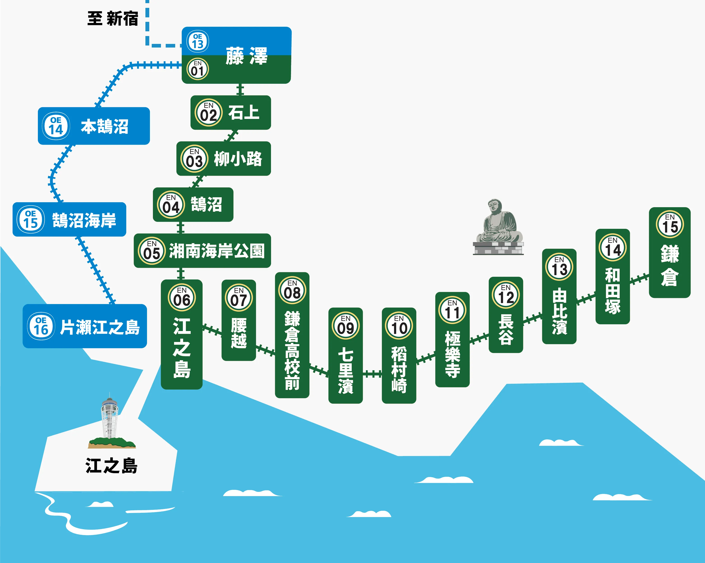
點擊放大
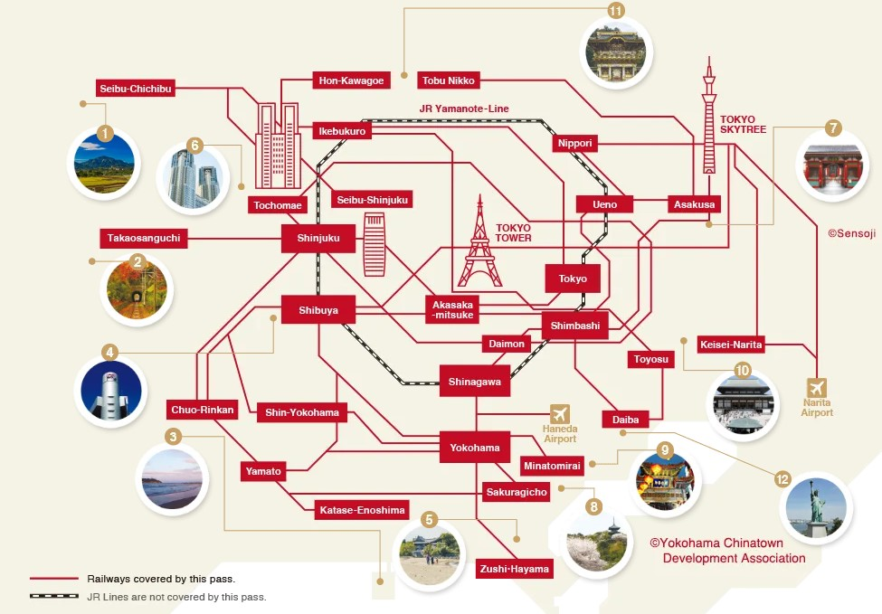
東京巴士
➢ 都營巴士 (官網連結)
都營巴士是東京主要的巴士系統之一，由東京都交通局運營，遍佈東京的23區的中心地帶，所以到東京都市中心和下町區域等地的各個觀光景點都很方便。
車資為成人210日圓、兒童110日圓，都營巴士的票價是單一票價，不論搭乘距離長短。 但如果要去多個景點推薦還是購買觀光票券較為划算。
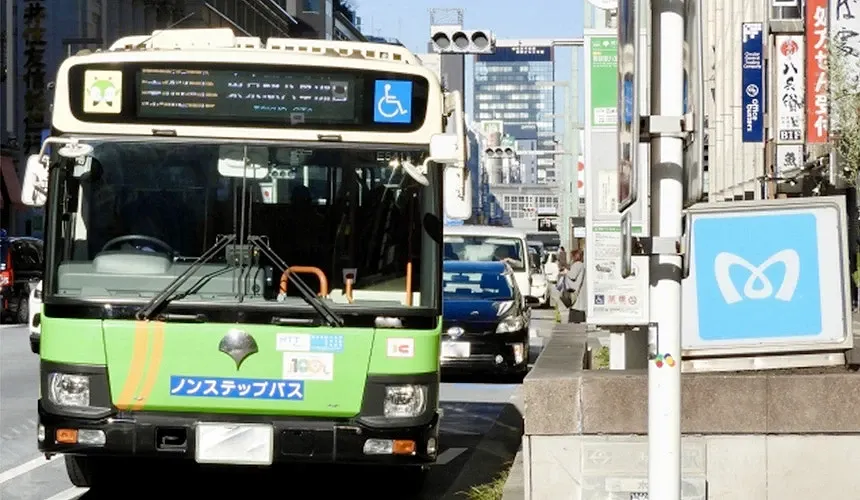
公車路線圖(官網連結)
點擊放大
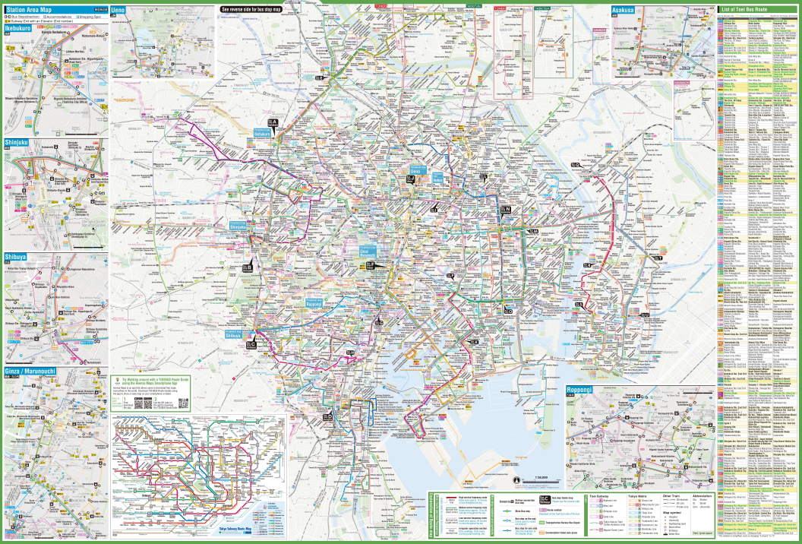
➢ 私營巴士 (官網連結)
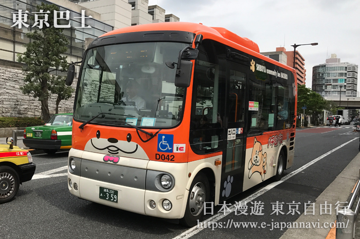
東京市內除東京都營公交巴士外，還有多家民間巴士公司經營公交巴士。
私營巴士按里程計價，這種巴士上車後，先在乘車口處領取整理卷，然後注意觀看車內前方螢光顯示板上顯示的車費價格，按整理卷上記載的號碼，對照顯示的金額在下車時和整理卷一起將硬幣投入BOX既可。
如忘記領取整理卷，則需支付從始發站起價的車費，一定要加以注意。
為了方便乘車，最方便的方法就是買一張Pasmo交通充值卡或Suica卡，有了交通卡，基本上所有的巴士線路就都能夠搭乘了。
➢ 機場巴士 (利木津巴士)
成田機場有利木津巴士、京成巴士、TYO-NRT…等，大家最常用的是「利木津巴士」。
利木津巴士提供了便捷的交通選擇，連接成田國際機場與東京市內及周邊主要地區。
利木津巴士從成田機場主要停靠站包括東京站、新宿站、台場、秋葉原等熱門地點，方便旅客在抵達後迅速前往市中心或轉乘其他交通工具。
此外，巴士也會停靠主要的酒店區域，如台場和汐留等，方便旅客直達住宿地點，從東京市區、橫濱、新宿站搭乘利木津巴士到成田機場約2小時左右。
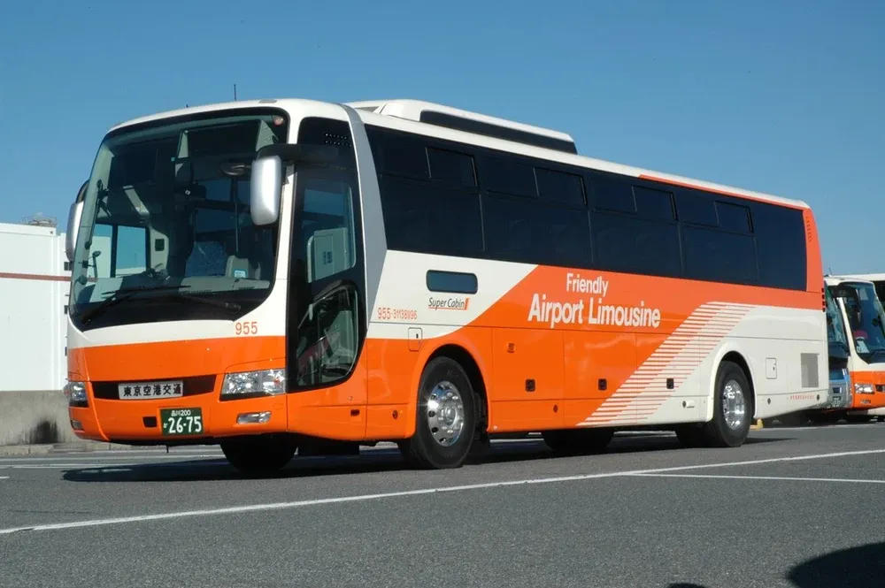
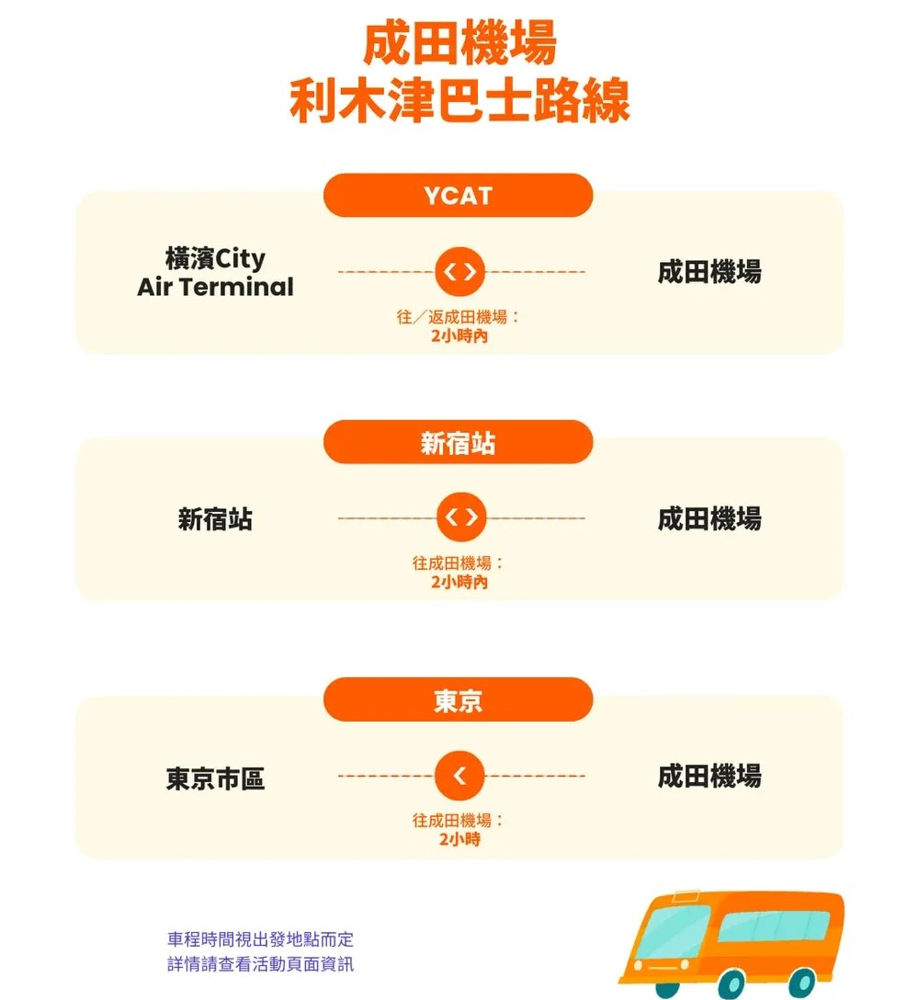
機場接送比較
| 項目 | 利木津巴士 | Skyliner | ACCESS/京成本線 | NEX | 包車接送 |
|---|---|---|---|---|---|
| 覆蓋範圍 | 覆蓋東京都及周邊地區 | 停靠車站少，最快40分鐘直達「上野」 | 最快60分鐘 抵達「上野」 |
最快50分鐘 直達「東京車站」 |
依情況而定 |
| 有無對號 | ✔ | ✔ | ✘ | ✔ | ✔ |
| 價格 | 500~4,000日圓 | 2,580日圓 | 1,060-1,380日元 | 單程3,070-4,700日圓 來回5,000日圓 |
看狀況(最貴) |
| 優點 | 如果回程時行李眾多 有地方可以放 依情況尋找下車地點 |
有行李放置架 停靠車站少 |
價格最便宜 | 有大行李放置架 購買來回車票者可享免費站內轉乘JR優惠 |
有尊榮感 |
| 缺點 | 可能會塞車 | 最後只到上野，更遠的地方須轉其他鐵路 | 攜帶大件行李不方便 | 價格較其他電車高昂 | 可能會塞車 |
| 適合人群 | 主要在東京市中心 遊覽的旅客 |
上野小資族或 住淺草旅客 |
住上野或淺草旅客 | 計畫到東京較南、西、北的旅客 | 荷包深的人 |
➢ 觀光巴士
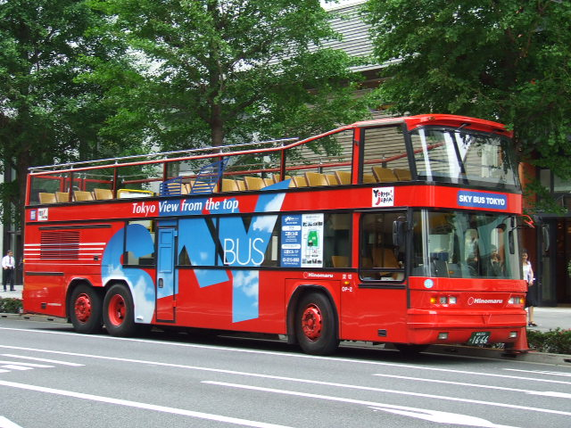
Sky Hop Bus (官網連結)
除了一般巴士外，還有提供無車頂的雙層巴士，營運多條觀光路線，沿除會有導遊講解沿途景點，可欣賞東京的美麗景色和城市大樓風光。
有三條不同的路線，覆蓋了東京許多主要景點，像是澀谷、台場、東京晴空塔和秋葉原等熱門景點的觀光巴士，有提供一日票和兩日票選擇，是東京唯一可以在效期內隨上隨下的觀光巴士，還有多種語言的語音導覽，很適合深度旅遊的外國乘客。
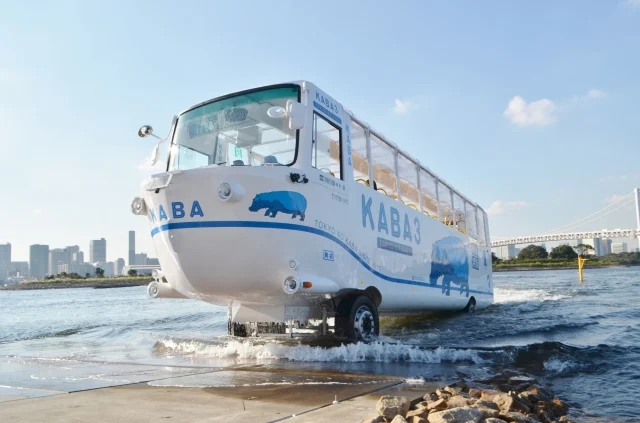
Tokyo no Kaba (官網連結)
是可同時在陸地和水上行駛的水陸兩用巴士，從台場出發, 能提供遊客用不同獨特的視角欣賞東京灣的觀光體驗，一趟行程約30~45分鐘左右，但需要提前透過網路或電話預約。
計程車
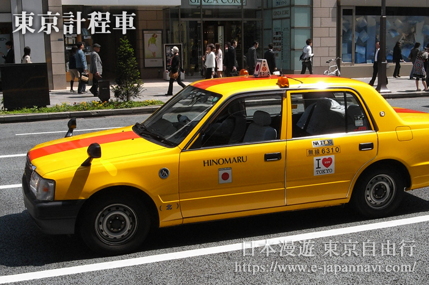
在東京搭乘計程車，方法跟模式都與台灣很像，也是由計程車公司營運的，像東京最大的計程公司是日本交通株式會社。
搭乘方式也很簡單，就是只要在路上看到計程車顯示綠燈，就是表示"空車"，就可以直接招手讓計程車停下來。
至於車資計算方式，也跟台灣一樣都是用跳錶的，有基本起跳價，也有夜間加成的機制(晚上22:00至早上5:00，會加收20%的夜間加成費用)，小編建議可以在下車前跟司機索取收據，這樣如果有不小心遺留東西在車上時才有機會找回來或聯絡司機。